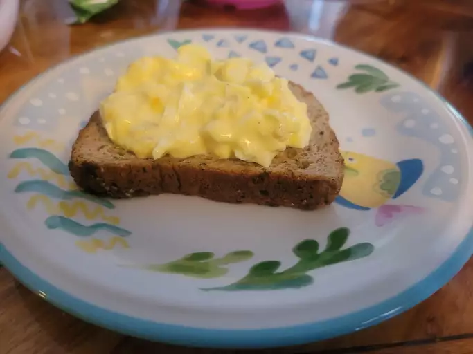

Delicious Egg Salad for Sandwiches

Description
Make deli-worthy egg salad sandwiches at home with this top-rated egg salad recipe! You'll come back to it again and again.
Ingredients
- Eggs: Of course, this egg salad recipe starts with eggs!
- Condiments: You'll need mayonnaise and mustard.
- Green onion: Green onions lend a pop of flavor and color.
- Seasonings: This egg salad is simply seasoned with salt, pepper, and paprika.
Steps
- Boil, peel, and chop the eggs.
- Combine the chopped eggs and the remaining ingredients.
- Serve on bread or with crackers.